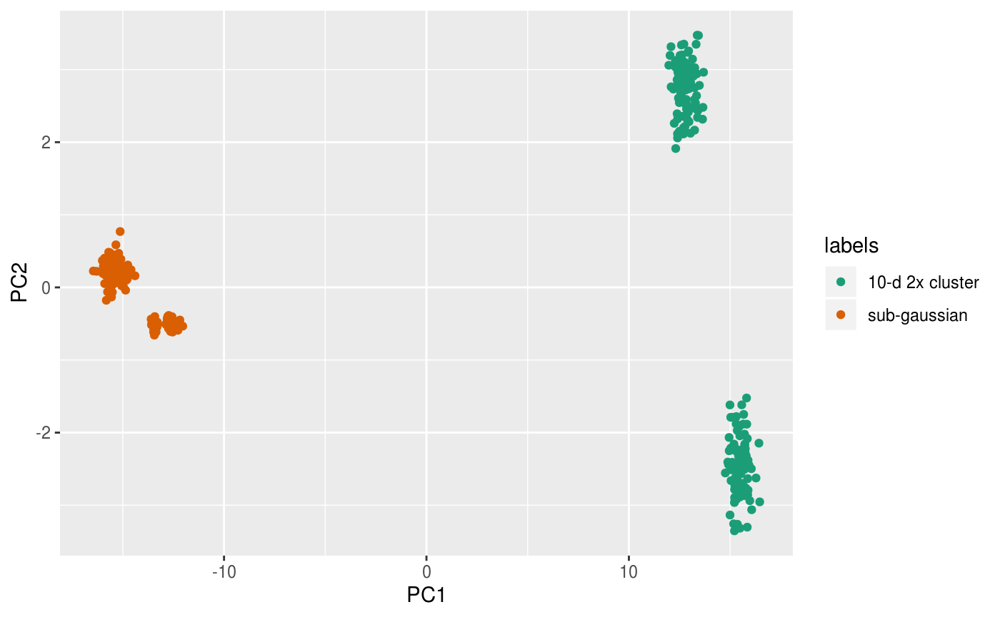
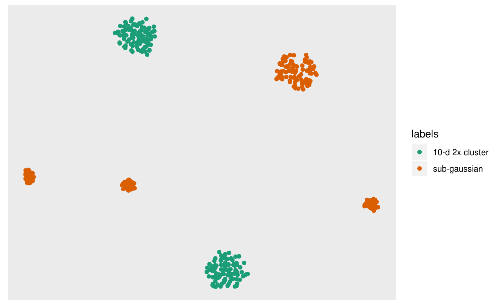
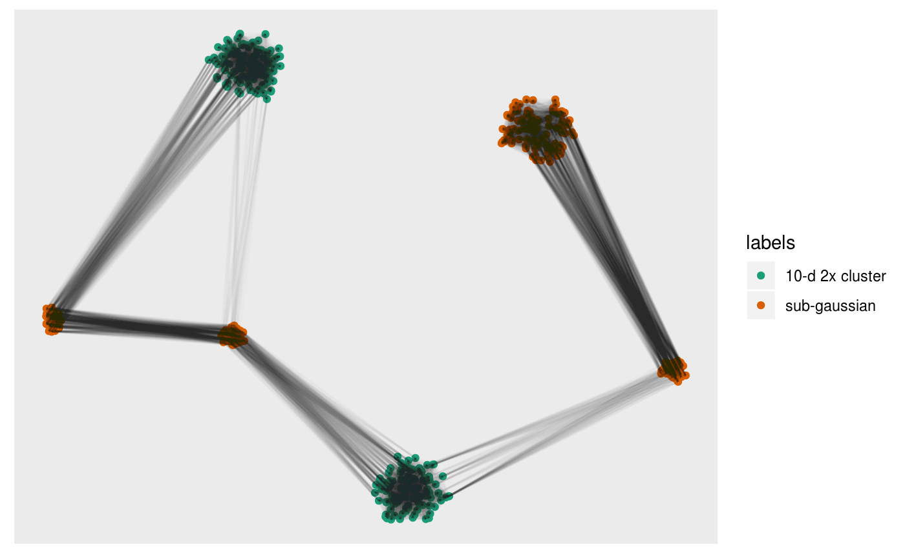
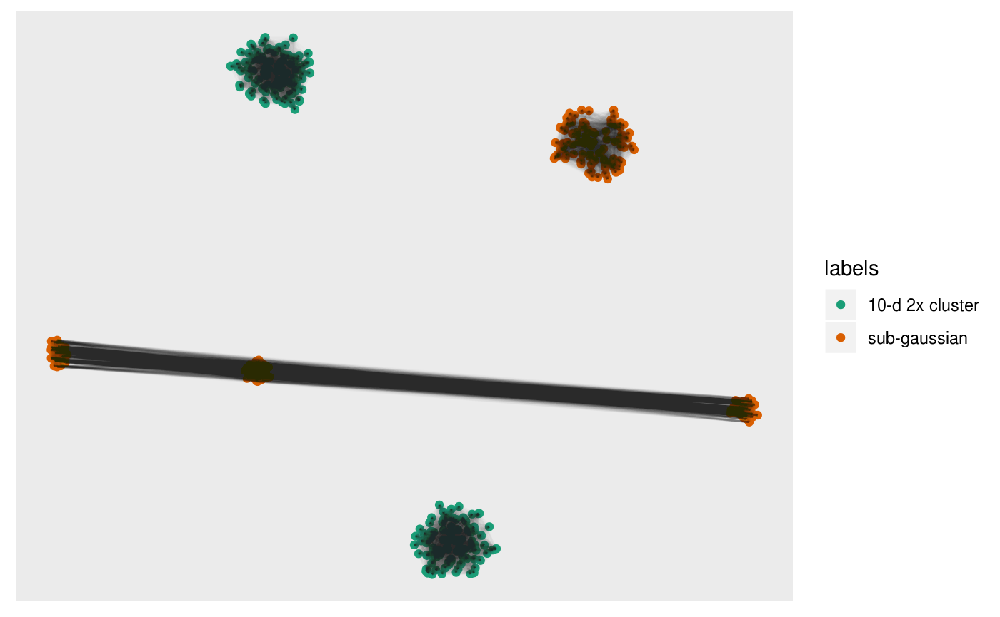
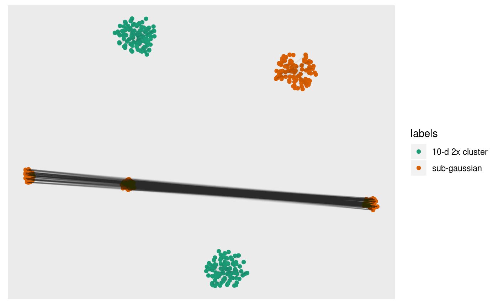
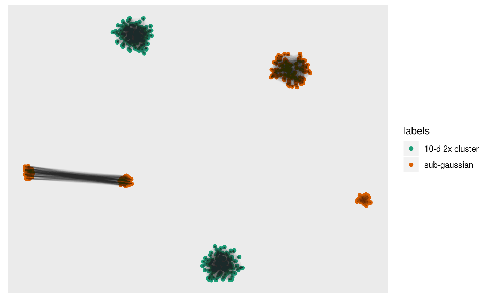
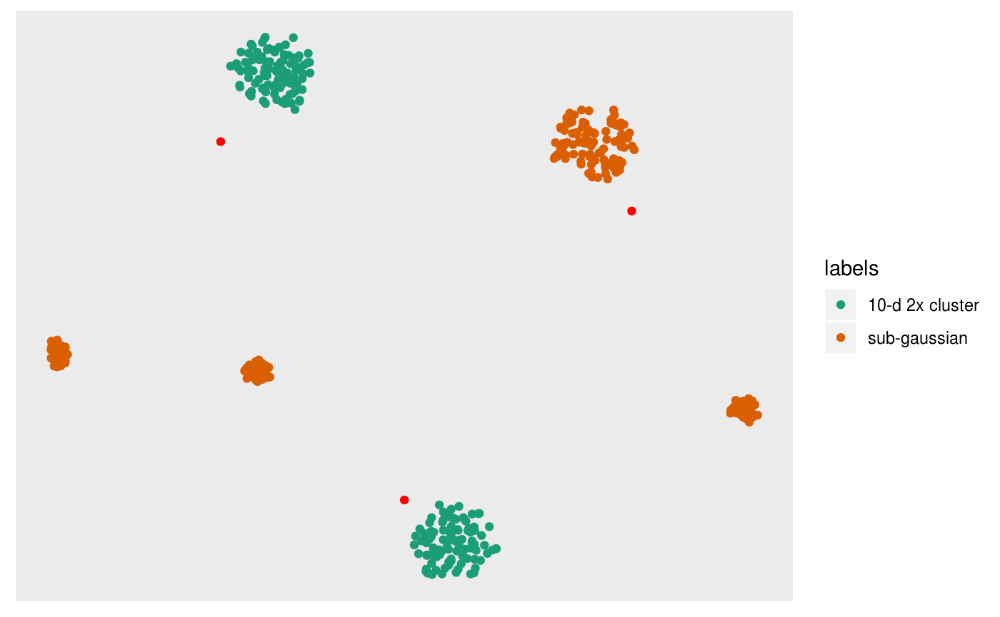
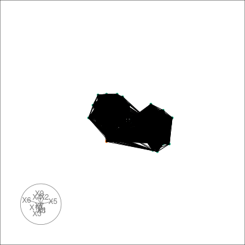
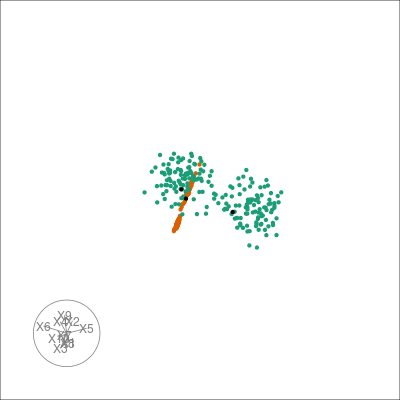

The goal of sneezy is to allow a user to exlpore non-linear embedding algorithms such as t-SNE and UMAP in the context of global geometry of the original high dimensional space. It does this in a few ways:
It provides a unified interface to a selection of embedding methods and nearest neighbor estimation methods.
This vignette walks through basic usage of sneezy to get you familiar with the data structures and methods available. For more advanced useage with ‘realistic’ analysis scenarios see the pbmc3k and pdfsense vignettes.
sneezy comes preloaded with a benchmark from the multi-challenge dataset.
This data arrives as a simple data.frame that contains a key indicating the challenge id and an index giving the observation id for that particular challenge, the remaining coordinates are the dimensions.
library(SingleCellExperiment)
library(sneezy)
head(multi)
#> key index X1 X2 X3 X4 X5 X6 X7 X8 X9 X10
#> 1 A 1 -0.7680942 -1.0628993 -1.5028950 0 0 0 0 0 0 0
#> 2 A 2 -1.3264069 -0.7257062 -1.4368393 0 0 0 0 0 0 0
#> 3 A 3 -0.8705006 -0.9446138 -0.7961634 0 0 0 0 0 0 0
#> 4 A 4 -1.1982279 -0.6339961 -1.0319850 0 0 0 0 0 0 0
#> 5 A 5 -0.5812532 -0.8399788 -0.7622555 0 0 0 0 0 0 0
#> 6 A 6 -1.0888959 -1.3565734 -1.1500098 0 0 0 0 0 0 0In order to keep track of the embeddings and transformations on the numerical parts of the data, sneezy creates a data structure called a TourExperiment. It extends the SingleCellExperiment::SingleCellExperiment() object with two additional slots called basisSets and neighborSets, we will describe their use in more detail shortly.
A TourExperiment object can be created directly from a data.frame or a matrix as follows:
multi_te <- TourExperiment(multi,
basisSets = SimpleList(),
neighborSets = SimpleList(),
X1:X10)
multi_te
#> class: TourExperiment
#> dim: 10 1000
#> metadata(0):
#> assays(1): view
#> rownames(10): X1 X2 ... X9 X10
#> rowData names(0):
#> colnames: NULL
#> colData names(2): key index
#> reducedDimNames(0):
#> spikeNames(0):
#> altExpNames(0):
#> neighborSetNames(0):
#> basisSetNames(0):The last argument is the selection of columns that form the numeric data that we are interested in exploring the structure of, called an assay in the nonmelcature of bioinformatics. Note this is transposed so rows are variables and columns are observations.
# the x1 - x10 data
assay(multi_te, "view")[, 1:5]
#> [,1] [,2] [,3] [,4] [,5]
#> X1 -0.7680942 -1.3264069 -0.8705006 -1.1982279 -0.5812532
#> X2 -1.0628993 -0.7257062 -0.9446138 -0.6339961 -0.8399788
#> X3 -1.5028950 -1.4368393 -0.7961634 -1.0319850 -0.7622555
#> X4 0.0000000 0.0000000 0.0000000 0.0000000 0.0000000
#> X5 0.0000000 0.0000000 0.0000000 0.0000000 0.0000000
#> X6 0.0000000 0.0000000 0.0000000 0.0000000 0.0000000
#> X7 0.0000000 0.0000000 0.0000000 0.0000000 0.0000000
#> X8 0.0000000 0.0000000 0.0000000 0.0000000 0.0000000
#> X9 0.0000000 0.0000000 0.0000000 0.0000000 0.0000000
#> X10 0.0000000 0.0000000 0.0000000 0.0000000 0.0000000We will start with a simpler look of the data by selecting the keys “A” and “D”. This consists of two well sepearted Gaussian clusters in 10 dimensional space (with same covariance matrix), and two 3-dimensional Gaussian clusters embeded in 10 dimensional space. One of the clusters has more granular structure and consists of three sub clusters. From the multichallenge dataset page this subset is described as follows:
The first subset consists of a Gaussian cluster and another cluster that is itself divided into three Gaussian clusters, all of them living in a three-dimensional space. This subset is used to demonstrate how an algorithm deals with different levels of granularity in cluster structures. The distance between the centers of the two main clusters, i.e. the the big cluster and the cluster that consists of the three smaller ones, is 5 times the standard deviation d of the first main cluster. The three smaller clusters are arranged around the center of the second cluster, which they themselves form, on a circle of radius 5-d equidistant from each other. The three 3 small cluster centers and the center of the large cluster lie in the same plane. The small clusters each have a standard deviation of d and one third of the number of 3 data points of the large cluster.
First we will subset the multi_te object:
multi_te2 <- multi_te[, colData(multi_te)$key %in% c("A", "D")]
colData(multi_te2)$labels <- ifelse(colData(multi_te2)$key == "A",
"sub-gaussian",
"10-d 2x cluster")
multi_te2
#> class: TourExperiment
#> dim: 10 400
#> metadata(0):
#> assays(1): view
#> rownames(10): X1 X2 ... X9 X10
#> rowData names(0):
#> colnames: NULL
#> colData names(3): key index labels
#> reducedDimNames(0):
#> spikeNames(0):
#> altExpNames(0):
#> neighborSetNames(0):
#> basisSetNames(0):We can get a view of the structure using exact principal components via the embed_linear function:
multi_te2 <- embed_linear(multi_te2,
num_comp = nrow(multi_te2),
.on = "view",
center = TRUE,
.engine = pca_exact())
multi_te2
#> class: TourExperiment
#> dim: 10 400
#> metadata(0):
#> assays(1): view
#> rownames(10): X1 X2 ... X9 X10
#> rowData names(0):
#> colnames: NULL
#> colData names(3): key index labels
#> reducedDimNames(1): pca_exact
#> spikeNames(0):
#> altExpNames(0):
#> neighborSetNames(0):
#> basisSetNames(0):This adds an element to the reducedDims slot called pca_exact() that stores the sample factors, and loadings for the principal components.
pcs <- reducedDim(multi_te2, "pca_exact")
pcs
#> class: LinearEmbeddingMatrix
#> dim: 400 10
#> metadata(0):
#> rownames: NULL
#> colnames(10): PC1 PC2 ... PC9 PC10
#> factorData names(1): sdevThe resulting principal components can be viewed via ggplot2:
library(ggplot2)
ggplot(
data.frame(sampleFactors(pcs), labels = colData(multi_te2)$labels),
aes(x = PC1, y = PC2)
) +
geom_point(aes(colour = labels)) +
scale_color_brewer(palette = "Dark2")
From the PCs we can clearly see the separation of the two 10-d clusters but cannot see the finer structure in the sub-gaussian clusters.
At this point we can compute exact t-SNE for a given perpelexity and exaggeration factor alpha:
set.seed(1010010)
multi_te2 <- embed_nonlinear(
multi_te2,
num_comp = 2,
.on = "view",
.engine = tsne_exact(perplexity = 30, alpha = ncol(multi_te2) / 10)
)
tsne <- reducedDim(multi_te2, "tsne_exact")And we can follow the same approach as before for visualising the results:
pl <- ggplot(
data.frame(sampleFactors(tsne), labels = colData(multi_te2)$labels),
aes(x = Dim1, y = Dim2)
) +
geom_point(aes(colour = labels)) +
scale_color_brewer(palette = "Dark2") +
theme(axis.title = element_blank(),
axis.ticks = element_blank(),
axis.text = element_blank(),
panel.grid = element_blank())
pl 
In this case it looks as though t-SNE has worked ok: it has identified the three subclusters of the second cluster for the orange points, and seperated the two ten dimensional clusters.
Next we can estimate the nearest neighbors on both the original dataset and in the embedding. This produces a matrix of indices for each row giving the nearest neighbor.
multi_te2 <- estimate_neighbors(multi_te2, 90, .on = "view")
multi_te2 <- estimate_neighbors(multi_te2, 90, .on = "tsne_exact")
dim(neighborSet(multi_te2, "tsne_exact"))
#> [1] 400 90You can then view the k-nearest neighbors graph overlaid on the scatter via the overlay_neighbors() function:
pl +
overlay_neighbors(sampleFactors(tsne)[,1],
sampleFactors(tsne)[,2],
neighborSet(multi_te2, "tsne_exact"),
alpha = 0.01)
This can give us a direct visualisation of how the difference between the emphasis t-SNE provides on local geometry by viewing the k-NN graph from the original dataset on the t-SNE layout.
pl +
overlay_neighbors(sampleFactors(tsne)[,1],
sampleFactors(tsne)[,2],
neighborSet(multi_te2, "view"),
alpha = 0.01)
We can directly visualise the difference:
pl +
overlay_difference_neighbors(sampleFactors(tsne)[,1],
sampleFactors(tsne)[,2],
neighborSet(multi_te2, "view"),
neighborSet(multi_te2, "tsne_exact"),
alpha = 0.01)
Or the intersection:
pl +
overlay_intersect_neighbors(sampleFactors(tsne)[,1],
sampleFactors(tsne)[,2],
neighborSet(multi_te2, "view"),
neighborSet(multi_te2, "tsne_exact"),
alpha = 0.01)
Sometimes the graph view can be messy, especially when there’s lots of neighbors. Instead we can estimate the centroids of clusters seen in the embedding by clustering the complete kNN or the shared nearest neighbor (sNN) graph. Note that this is heavily influenced by the use of
pl +
overlay_snn_centroids(sampleFactors(tsne)[,1],
sampleFactors(tsne)[,2],
neighborSet(multi_te2, "tsne_exact"),
color = "red") 
We can also tour around a data space, and see how the nearest neighbours graph from t-SNE space is preserved in high-dimensional space. We can take view the entire k-NN or s-NN graph in the embedding space. This allows us to see how t-SNE preserves local topology. First we generate a basis set on the for our tour, which will form part of our TourExperiment:
set.seed(1999)
multi_te2 <- generate_bases(multi_te2, .on = "view", max_bases = 300)
basisSetNames(multi_te2)
#> [1] "view"Then we can animate the tour view and overlay the neighbors with the following:
library(gganimate)
pal <- c("#1B9E77","#D95F02")[as.integer(factor(colData(multi_te2)$labels))]
sneezy_neighbors(multi_te2, "view", "tsne_exact", col = pal)
#> Using half_range 1.2
#>
Frame 1 (1%)
Frame 2 (2%)
Frame 3 (3%)
Frame 4 (4%)
Frame 5 (5%)
Frame 6 (6%)
Frame 7 (7%)
Frame 8 (8%)
Frame 9 (9%)
Frame 10 (10%)
Frame 11 (11%)
Frame 12 (12%)
Frame 13 (13%)
Frame 14 (14%)
Frame 15 (15%)
Frame 16 (16%)
Frame 17 (17%)
Frame 18 (18%)
Frame 19 (19%)
Frame 20 (20%)
Frame 21 (21%)
Frame 22 (22%)
Frame 23 (23%)
Frame 24 (24%)
Frame 25 (25%)
Frame 26 (26%)
Frame 27 (27%)
Frame 28 (28%)
Frame 29 (29%)
Frame 30 (30%)
Frame 31 (31%)
Frame 32 (32%)
Frame 33 (33%)
Frame 34 (34%)
Frame 35 (35%)
Frame 36 (36%)
Frame 37 (37%)
Frame 38 (38%)
Frame 39 (39%)
Frame 40 (40%)
Frame 41 (41%)
Frame 42 (42%)
Frame 43 (43%)
Frame 44 (44%)
Frame 45 (45%)
Frame 46 (46%)
Frame 47 (47%)
Frame 48 (48%)
Frame 49 (49%)
Frame 50 (50%)
Frame 51 (51%)
Frame 52 (52%)
Frame 53 (53%)
Frame 54 (54%)
Frame 55 (55%)
Frame 56 (56%)
Frame 57 (57%)
Frame 58 (58%)
Frame 59 (59%)
Frame 60 (60%)
Frame 61 (61%)
Frame 62 (62%)
Frame 63 (63%)
Frame 64 (64%)
Frame 65 (65%)
Frame 66 (66%)
Frame 67 (67%)
Frame 68 (68%)
Frame 69 (69%)
Frame 70 (70%)
Frame 71 (71%)
Frame 72 (72%)
Frame 73 (73%)
Frame 74 (74%)
Frame 75 (75%)
Frame 76 (76%)
Frame 77 (77%)
Frame 78 (78%)
Frame 79 (79%)
Frame 80 (80%)
Frame 81 (81%)
Frame 82 (82%)
Frame 83 (83%)
Frame 84 (84%)
Frame 85 (85%)
Frame 86 (86%)
Frame 87 (87%)
Frame 88 (88%)
Frame 89 (89%)
Frame 90 (90%)
Frame 91 (91%)
Frame 92 (92%)
Frame 93 (93%)
Frame 94 (94%)
Frame 95 (95%)
Frame 96 (96%)
Frame 97 (97%)
Frame 98 (98%)
Frame 99 (99%)
Frame 100 (100%)
#> Finalizing encoding... done!
And look at the centroids in the original space of the nearest neighbours graph in t-SNE space:
sneezy_centroids(multi_te2, "view", "tsne_exact", col = pal)
#> Using half_range 1.2
#>
Frame 1 (1%)
Frame 2 (2%)
Frame 3 (3%)
Frame 4 (4%)
Frame 5 (5%)
Frame 6 (6%)
Frame 7 (7%)
Frame 8 (8%)
Frame 9 (9%)
Frame 10 (10%)
Frame 11 (11%)
Frame 12 (12%)
Frame 13 (13%)
Frame 14 (14%)
Frame 15 (15%)
Frame 16 (16%)
Frame 17 (17%)
Frame 18 (18%)
Frame 19 (19%)
Frame 20 (20%)
Frame 21 (21%)
Frame 22 (22%)
Frame 23 (23%)
Frame 24 (24%)
Frame 25 (25%)
Frame 26 (26%)
Frame 27 (27%)
Frame 28 (28%)
Frame 29 (29%)
Frame 30 (30%)
Frame 31 (31%)
Frame 32 (32%)
Frame 33 (33%)
Frame 34 (34%)
Frame 35 (35%)
Frame 36 (36%)
Frame 37 (37%)
Frame 38 (38%)
Frame 39 (39%)
Frame 40 (40%)
Frame 41 (41%)
Frame 42 (42%)
Frame 43 (43%)
Frame 44 (44%)
Frame 45 (45%)
Frame 46 (46%)
Frame 47 (47%)
Frame 48 (48%)
Frame 49 (49%)
Frame 50 (50%)
Frame 51 (51%)
Frame 52 (52%)
Frame 53 (53%)
Frame 54 (54%)
Frame 55 (55%)
Frame 56 (56%)
Frame 57 (57%)
Frame 58 (58%)
Frame 59 (59%)
Frame 60 (60%)
Frame 61 (61%)
Frame 62 (62%)
Frame 63 (63%)
Frame 64 (64%)
Frame 65 (65%)
Frame 66 (66%)
Frame 67 (67%)
Frame 68 (68%)
Frame 69 (69%)
Frame 70 (70%)
Frame 71 (71%)
Frame 72 (72%)
Frame 73 (73%)
Frame 74 (74%)
Frame 75 (75%)
Frame 76 (76%)
Frame 77 (77%)
Frame 78 (78%)
Frame 79 (79%)
Frame 80 (80%)
Frame 81 (81%)
Frame 82 (82%)
Frame 83 (83%)
Frame 84 (84%)
Frame 85 (85%)
Frame 86 (86%)
Frame 87 (87%)
Frame 88 (88%)
Frame 89 (89%)
Frame 90 (90%)
Frame 91 (91%)
Frame 92 (92%)
Frame 93 (93%)
Frame 94 (94%)
Frame 95 (95%)
Frame 96 (96%)
Frame 97 (97%)
Frame 98 (98%)
Frame 99 (99%)
Frame 100 (100%)
#> Finalizing encoding... done!